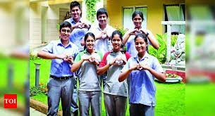
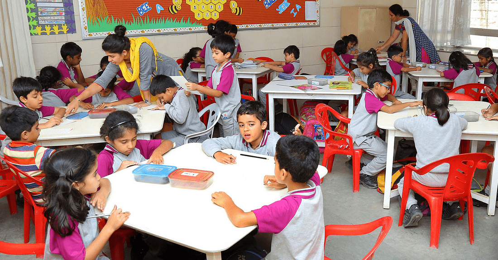
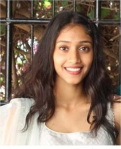
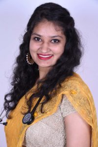

What's New
City students save lives of children with heart diseases.
A couple of weeks ago, students of Vidyaniketan School in Hebbal participated in a unique social campaign, which was about more than donating clothes or stationery for the less privileged. Students from Class 10 to 12 kickstarted a crowdfunding campaign to raise funds for pediatric heart surgeries. “We were intrigued by the workshop conducted by Ranganathan Thota, who is the founder of the crowdfunding platform, FuelADream, and it was then that we realised the need for financial assistance for families of children requiring heart surgeries,” says 17-year-old, Mohammed Amaan Asim, a Class 12 student, adding, “We realised that crowdfunding was a cost-effective way to reduce the financial burden of such families.” But what took the kids by surprise is the overwhelming response to their intiative, when they managed to raise Rs 10 lakh in less than 48 hours, which grew to Rs 24 lakh in the next few days. The students are hopeful of putting together a tidy sum by the end of the campaign this month. Close to 72 students have participated in the campaign that is set to help facilitate close to 90 pediatric surgeries at the government-run Jayadeva Hospital. The goal, they say, was to have each participant raise Rs 30,000, but many students outdid themselves. For instance, Shreya Mittal, a Class 10 student, raised Rs 1,62,000 and her message to the contributors on the platform read, “With your help, I want to save a needy child suffering from a heart ailment. Help me with a BIG HEART.” Bengaluru School’s 2019 Resolutions Are Creating Better Kids!
It is one thing to be taught something and a completely different thing to be encouraged to put that learning into practice. Vidya Niketan, a school based in Hebbal, Bengaluru, has started a rather unique initiative, which encourages students, teachers, and parents to spend 40 hours in 2019 towards community development. In a conversation with The Better India, Mrs H Vithani, the founder of the school, tells us how this idea came into being.“I had heard about a tech giant in the city giving its employees 40 hours of leave to enable them to participate in community development programmes. Given that in schools, we already have enough holidays, I modified the plan to suit our needs,” she begins. Every member of the school, whether teaching staff or administrative, students or support staff, are participating in this unique resolution. Alumni
Kavya S:
Kavya S an alumnus of Vidya Niketan School has emerged the All-India second topper in Chartered Accountants Final Examination held in May 2019. She has secured an All-India rank of 25 in 2016 in the integrated course. She completed articleship from Deloitte which pursuing B.Com at St.Joseph’s College of Commerce.
Aayush Agarwal: I am a proud Niketanite who graduated with the batch of 2012. I continued to pursue my education in Computer Science and recently completed a Masters in Data Analytics at Manipal University. As part of the placement drive in campus, several companies visited the college.
Meera Venkatesh: I am Meera Venkatesh, Ex-student of Vidya Niketan School. Now I’m pursuing my 3rd year Engineering in MS Ramaiah institute of technology. I was the student council member for cleanliness and community service in 11th and 12th grade under the guidance of Mrs. Vithani and Mrs. Sarala Mohan Raj.
Maneesha: Congratulations to Maneesha of First B.Com E for securing All India 44th Rank in CA Foundation in St. Joseph’s College of Commerce in November 2018 examination.
Dr. Nikita Bathla: I joined Vidya Niketan School in 2009 to pursue a secondary education in science through the ISC program. As a 15-year-old, it amazed me how intricately human beings were constructed. A well-oiled machine, running smoothly from head to toe.
Aishwarya Amar: I joined Vidya Niketan in 2001 and passed out in the year 2013 with a lot of confidence and fervor to face all challenges and to excel in all walks of life. At school, I was an avid debater and passionately participated in various Model United Nation Conferences which sparked my keen interest in international relations and law.
Contact Us
Primary school: Ms. Sharanya Shetty.
Middle school: Ms. Elizabeth Sunil.
High school: Ms. Lalitha Desikan, Ms. Anita Manoj.